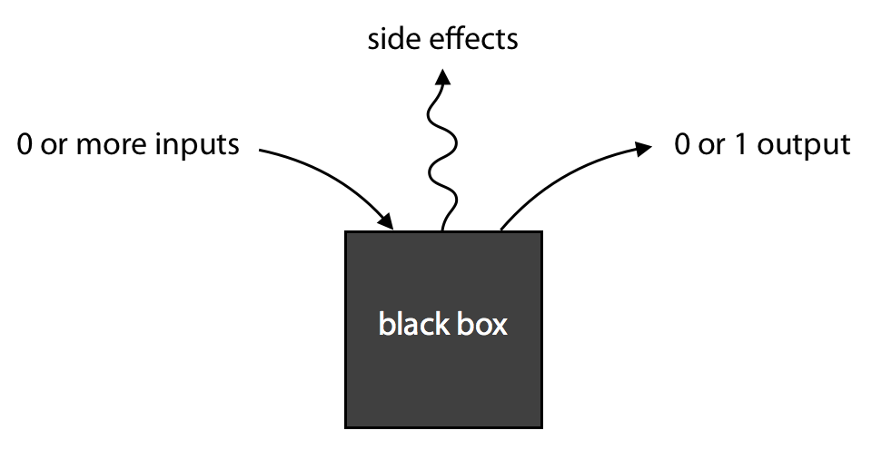

Array e Funzioni
![]()
In questa lezione si introducono i meccanismi alla base della gestione della memoria. Gli argomenti vengono presentati in ordine diverso rispetto al libro di testo.
Array
Introduciamo ora gli array, la prima struttura dati che affronteremo.
Generalmente una variabile può contenere un solo valore, spesso però si vuole eseguire operazioni su una sequenza di variabili, una soluzione è l’utilizzo di un array (o vettore). Un array è una collezione di elementi omogenei (tutti dello stesso tipo).
La dichiarazione di un array avviene specificando il tipo e il numero degli elementi:
int a[10]L’introduzione di costanti hardcoded produce codice difficile da rifattorizzare e mantenere, per questo, spesso, si stabilisce ad inizio programma una costante (o una macro) per scrivere un valore in un unico posto:
#define N 10
int a[N];oppure:
const int N = 10;
int a[N];nei precedenti esempi viene definita \(N\) ad inizio programma, nel resto del codice basterà usare questa costante quando ci si deve riferire alla dimensione dell’array \(a\). Qualora ci si accorgesse in futuro che 10 non sia un numero sufficiente per contenere i dati del programma, basterà cambiare una sola riga di codice.
Si accede a un elemento dell’array tramite subscripting:
int a[2];
a[0] = 1;
a[1] = 2;Gli indici degli array in C partono da 0, come in Java.
L’espressione a[i] (o simili) è un lvalue (left-value), ossia può essere usata come variabile, può quindi trovarsi a sinistra di un’assegnazione.
Il compilatore C non controlla i limiti degli array, quindi è possibile accedere a elementi fuori dal range definito, questo può causare errori difficili da individuare.
int a[10], i;
for (i = 0; i <= 10; i++) {
a[i] = 0;
}In certi compilatori il codice sopra riportato causa un loop infinito (più spesso però genera un errore a runtime e ferma l’esecuzione).
Si intuisce che C sia molto permissivo con il subscripting, il seguente codice quindi è perfettamente legittimo:
int a[50];
int i = 0, j = 3;
a[i+j*10] = 0;
i = 0;
while (i < j)
a[i++] = 0;Inizializzazione
Un array può essere inizializzato al momento della dichiarazione:
int a[5] = {1, 2, 3, 4, 5};Se si mettono meno numeri, i restanti elementi vengono inizializzati a 0 (ma questo non succede se non ne specifico nessuno!):
int a[5] = {1, 2, 3}; // a = {1, 2, 3, 0, 0}
int b[4] = {0}; // b = {0, 0, 0, 0}Se metto più elementi di quelli dichiarati il compilatore segnala un errore. Se invece si omette la dimensione dell’array, il compilatore la calcola automaticamente dalla lista di initializzazione:
int a[] = {1, 2, 3}; // a ha dimensione 3Dimensione di un array
In C non esiste un sistema per ottenere senza sforzo la dimensione di un array, per questo, spesso, si utilizza una variabile per memorizzare la dimensione dell’array.
Tuttavia si può usare sizeof per ottenere la dimensione di un array:
int a[10];
sizeof(a); /* restituisce 40 su una macchina a 32 bit */
sizeof(a[0]); /* 4 */
sizeof(a)/sizeof(a[0]); /* 10, la dimensione dell'array */Array multidimensionali
Un array può contenere elementi di qualsiasi tipo, anche altri array! Per dichiarare un array multidimensionale si specifica il numero di elementi per ogni dimensione:
int matrix[5][9];
Per accedere a un elemento di un array multidimensionale si usano più indici:
matrix[1][5] = 42; e NON matrix[1,5] = 42;

Funzioni
Una funzione è una associazione tra due insiemi: il dominio e il codominio: \(f: A \rightarrow B\)
In programmazione il concetto di funzione è simile: una funzione è un blocco di codice che accetta un certo numero di argomenti e, spesso, restituisce un valore. Oltre al valore, però, una funzione può anche avere side effects, cioè modificare lo stato del programma.
In C si può pensare a una qualsiasi funzione come una scatola nera con un certo numero di ingressi e un solo output.

Praticamente una funzione è un sottoprogramma, un insieme di istruzioni che esegue un compito specifico.
return_type function_name( parameters )
{
declarations
statements
}Esempio:
double average(int a, int b)
{
double average;
average = (a + b) / 2.0;
return average;
}Il tipo di ritorno può essere void, in tal caso la funzione non restituisce alcun valore:
void print_int(int a)
{
printf("%d\n", a);
return;
}L’istruzione return può essere omessa in una funzione void.
Le funzioni dichiarate precedentemente nel programma possono essere eseguite in blocchi di codice successivi.
Ogni chiamata di funzione è una espressione, e viene valutata con il suo valore di ritorno.